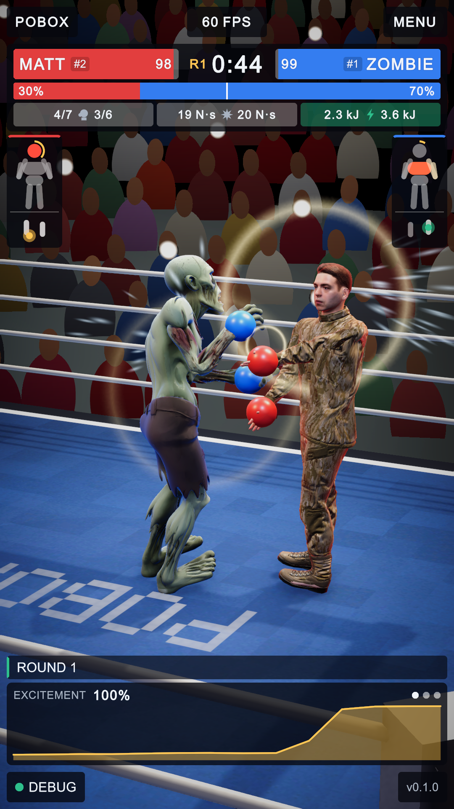
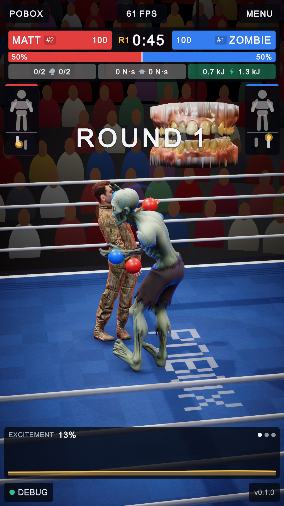
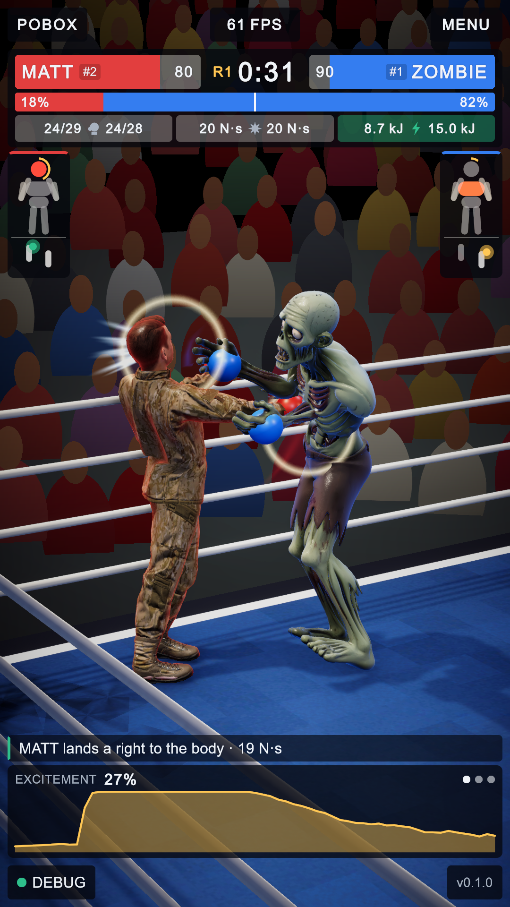
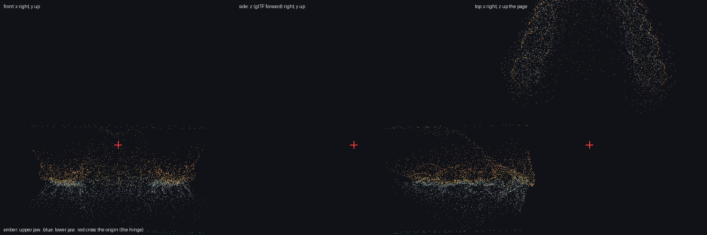

PoBox: the teeth are the ring announcer
1 October 2026 · the arena before and after, with what changed marked on the pictures
The owner asked for the teeth (2025_TeethUpper.ply and 2025_TeethLower.ply, two
dental scans) to be the boxing ring's announcer. They now hang over the middle of the ring on a cable, where
an announcer's microphone hangs, and they talk: the jaw opens and shuts with what is being said.
The ring, before and after

A
1 2 3- Before: nothing over the ring. The commentary was a line of text at the bottom of the screen and nobody said it.
- The teeth, twelve times life size (about 90 cm across), in the scanner's own colours. They turn to face whichever camera is live.
- The cable they hang from. They rest 3.3 m above the canvas and come down to 2.45 m to speak.
- The mouth is open because it is speaking: in this picture it is in the middle of a line.
The two pictures are a few seconds into round one of two different bouts, so the boxers and the camera are not in the same place. Nothing on the HUD moved; the announcer is an object in the hall, not part of the interface.
What it says, and when
| When | Aloud |
|---|---|
| The boxers are shown in their corners | "In the red corner! MATT! And in the blue corner! ZOMBIE!" |
| A round starts | "Round one!" (two, three) |
| A boxer goes down | "Down!" |
| The bout ends | "And the winner is! ZOMBIE!", or "It is a draw!" |
| Any other line of commentary (the text at the bottom) | Nothing: it mouths the line, a syllable at a time, for as long as the line would take to say |
The voice is the speech synthesiser that comes with Windows (the voice called David), recorded once into fifteen short files: eight phrases and a name for each of the seven boxers, the five now in training included. While a recording plays, the jaw follows its loudness.
Where it is not seen

The cameras cut close when punches land, and a close shot has no room above the boxers' heads: the teeth are out of the picture, as here. They are seen in the wide shots, at the walk-on and at the result, which is when an announcer speaks.
How the scans became a model

The scans arrive in the scanner's own position, in millimetres, 320,000 and 382,000 triangles. A script
(training/tools/teeth_to_glb.py, run by Blender) works out which way they face from their shape:
up is the thin direction, left to right is the direction the arch mirrors itself in, and the front is the
closed end of the U. It stands them upright, thins each to 30,000 triangles, and puts the origin of both
where a jaw's hinge is (the red cross: behind and above the back teeth), so the lower jaw opens by turning
about one axis.
Changing it
| To | Do |
|---|---|
| Move it, resize it, change the heights or how wide it opens | Edit Assets/Announcer/TeethAnnouncer.prefab (the numbers are on the TeethAnnouncer component), or the object in the Arena scene |
| Turn the voice off | Untick Speak Aloud on the component; it then mouths everything |
| Add a boxer's name, or change the voice | Add a line to Assets/Announcer/make_voice.ps1, run it with Windows PowerShell, then menu PoBox / Announcer / Rebuild Prefab |
| Use other scans | Run teeth_to_glb.py on them (the command is at the top of the file), then Rebuild Prefab |
It is added to the arena each time the arena is built (it subscribes to the builder's
BuildingArena event), so PoBox / Build Everything keeps it.